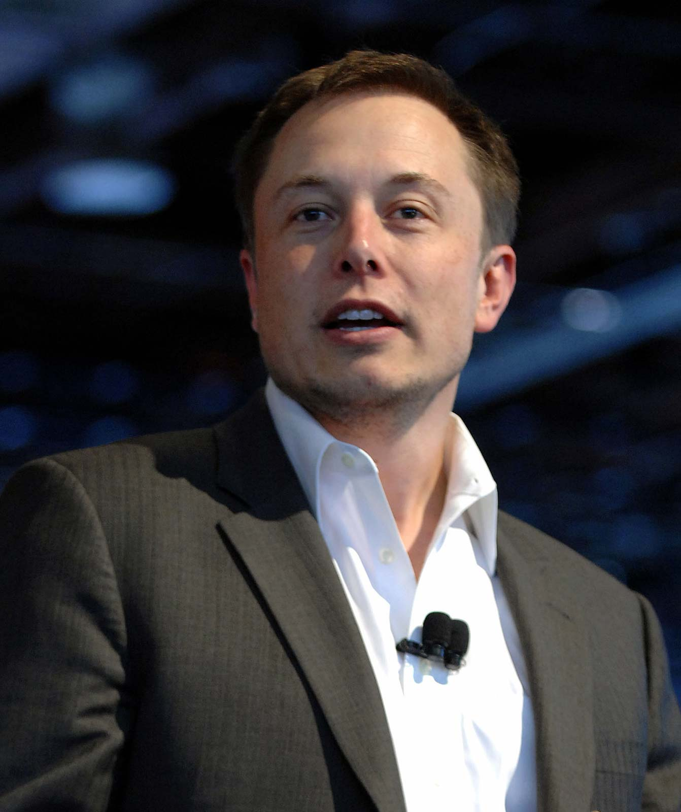

Elon Musk (2010)Elon Musk: A Tribute Page
Elon Reeve Musk is an entrepreneur and business magnate. He is the founder and CEO at SpaceX; CEO and product architect of Tesla Inc.; founder of The Boring Company; and co-founder of Neuralink and OpenAI. A centibillionaire, Musk is the richest person in the world, as of September 2021.
Musk was born to a Canadian mother and South African father and raised in Pretoria, South Africa. He briefly attended the University of Pretoria before moving to Canada aged 17 to attend Queen's University. He transferred to the University of Pennsylvania two years later, where he received bachelor's degrees in economics and physics. He moved to California in 1995 to attend Stanford University but decided instead to pursue a business career, co-founding the web software company Zip2 with brother Kimbal. The startup was acquired by Compaq for $307 million in 1999. The same year, Musk co-founded online bank X.com, which merged with Confinity in 2000 to form PayPal. The company was bought by eBay in 2002 for $1.5 billion.
via WikipediaFun Facts about Elon Musk
-
Musk’s annual salary at Tesla is $1
Yes, Elon Musk just draws an annual salary of $1 from Tesla while most of his fortune comes from his share in stock. Although, there was a time when Elon couldn’t even make ends meet as he lived off just $1 buying hot dogs and oranges in bulk.
-
Musk has founded eight companies to date
Elon Musk has founded a total of eight companies – Zip2, PayPal, SpaceX, Tesla, Hyperloop, OpenAI, Neuralink, and The Boring Company.
-
Musk created a video game at age 12, sold it for $500
Musk created a video game called ‘Blastar’ at age 12. He wrote the computer programming for the game which was science fiction inspired game similar to Space Invaders. The game was later published by a South African company who paid Musk $500 for its source code.
Education
At age 17, in 1989, Musk moved to Canada to attend Queen’s University and avoid mandatory service in the South African military. Musk obtained his Canadian citizenship that year, in part because he felt it would be easier to obtain American citizenship via that path.
In 1992, Musk left Canada to study business and physics at the University of Pennsylvania. He graduated with an undergraduate degree in economics and stayed for a second bachelor’s degree in physics.
After leaving Penn, Musk headed to Stanford University in California to pursue a PhD in energy physics. However, his move was timed perfectly with the Internet boom, and he dropped out of Stanford after just two days to become a part of it, launching his first company, Zip2 Corporation in 1995. Musk became a U.S. citizen in 2002.